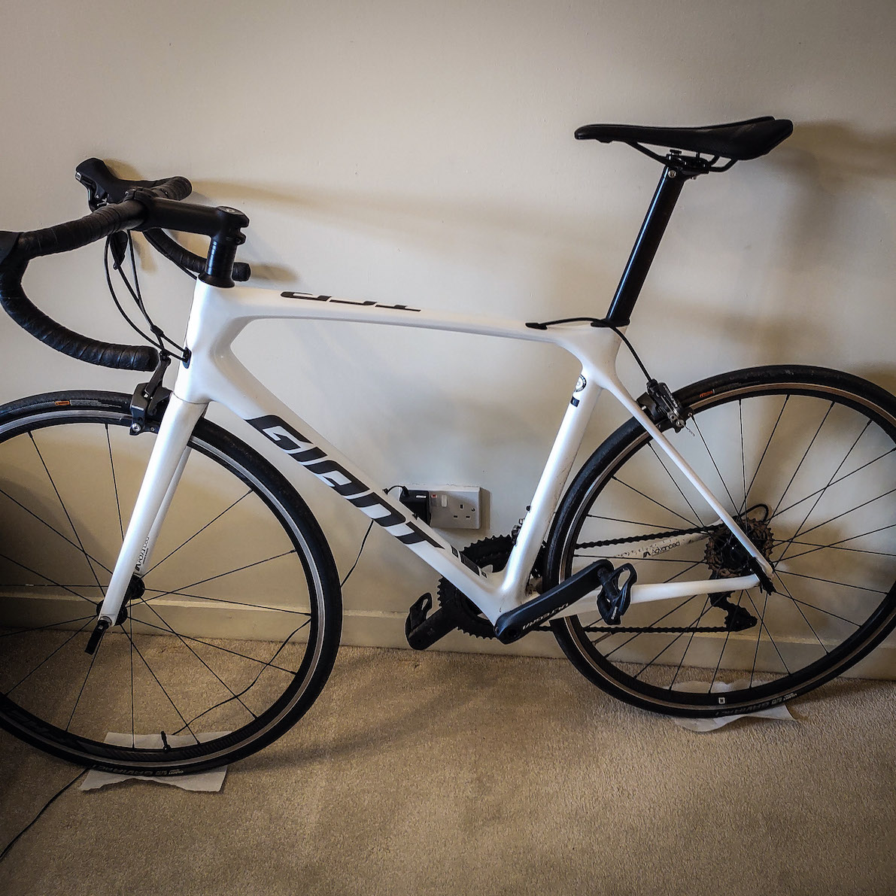

In July 2020, I bought a road bike. This road bike is my life, my love, my everything. He is called RoGeR. He’s a handsome mature man who is capable of anything his user puts him up to. The name comes, obviously, from the GoAT Roger Federer however, the letter case makes reference to LaTeX which implies skill, art technique and precision. Much like Roger himself. See the website header for a link to my Strava and keep up with my roadie’ing. There’s also some excellent tennis and walking stats here too.
| Giant TCR Advanced 1 (a.k.a. RoGeR) Giant TCR Advanced 1 Frame (Frost White) Giant Contact Stem, Bars, Seatpost (@55mm) & Saddle Giant PR-2 Wheelset Shimano Ultegra Full Groupset (22 Speed) Continental Grand Sport Extra 700x25c Road Foldable Tyre(s) Continental R28 Road 700x25c 42mm Presta Valve Inner Tube(s) Maintenance (Cleaning) |
 |
Cycling |
Hiking & Walking |
Tennis |